APRS
Stacje APRS na mapie na żywo, szczegóły stacji, śledzenie i podgląd pakietów.
Program dla krótkofalowców · Windows
Mapa APRS, zasięg i profil łącza radiowego z uwzględnieniem terenu, lasów i zabudowy (wynik w jednostkach S), propagacja KF, lokator QTH i przeliczanie współrzędnych – wszystko w jednym programie.
Stacje APRS na mapie na żywo, szczegóły stacji, śledzenie i podgląd pakietów.
Pomiar odległości i azymutu z przekrojem terenu wzdłuż trasy.
Osobne parametry każdej stacji, anteny Yagi i logperiodyczne z polaryzacją, straty kabli i złączy, wynik w jednostkach S oraz raporty PDF.
Mapy propagacji VOACAP i aktualne dane słoneczne dla pasm KF.
Przeliczanie WGS84 / DMS / UTM / MGRS / lokator QTH oraz wysokość n.p.m.
Pobieranie wybranego regionu mapy do pracy bez internetu. Do wyboru 3 warstwy mapy.
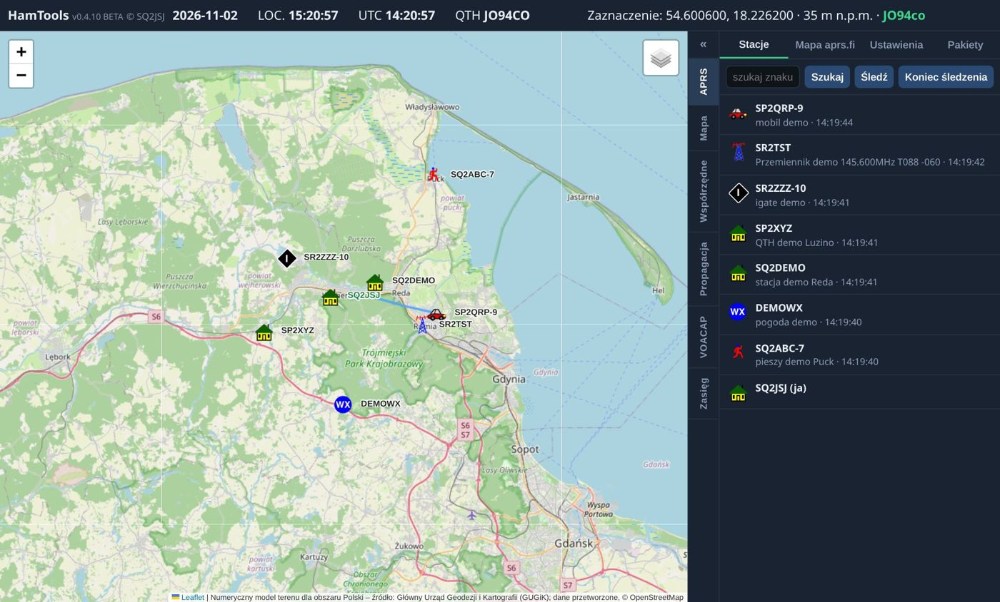
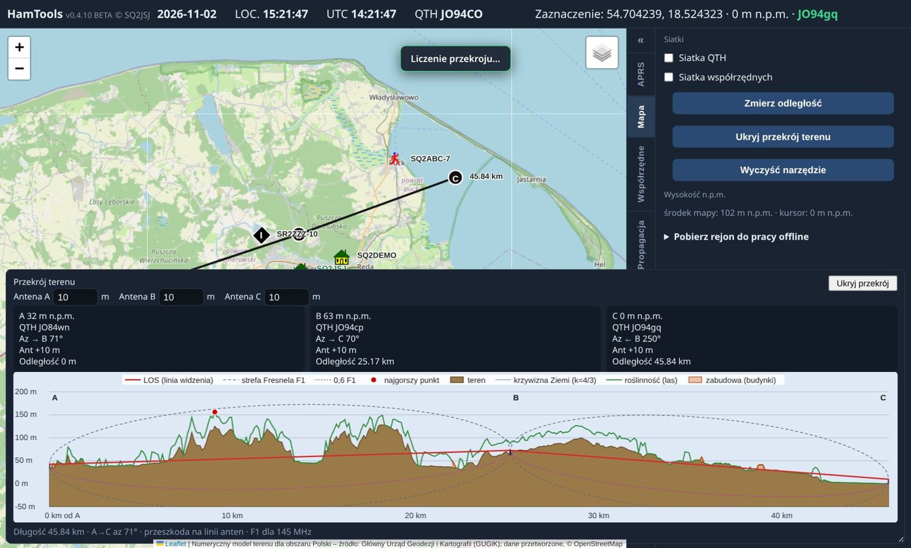
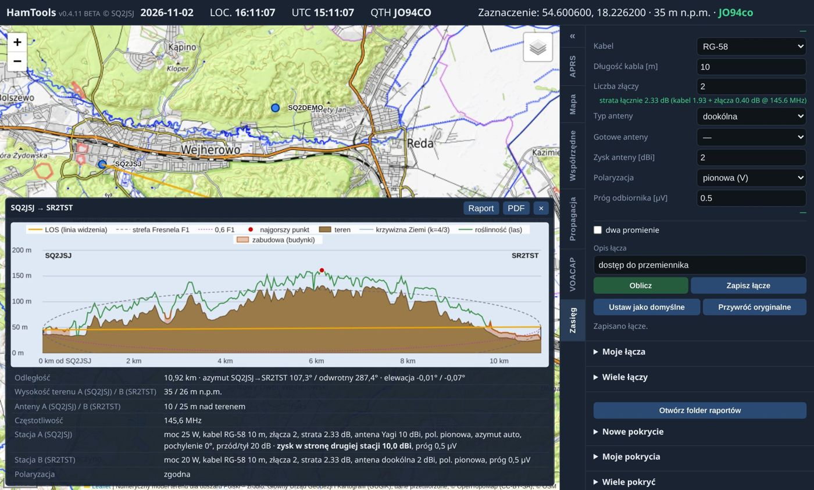
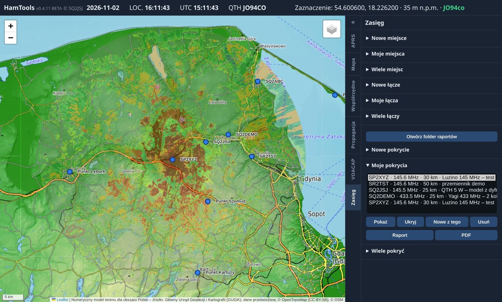
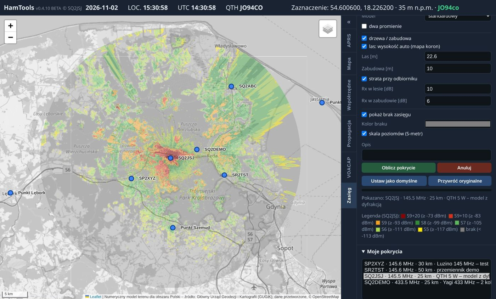
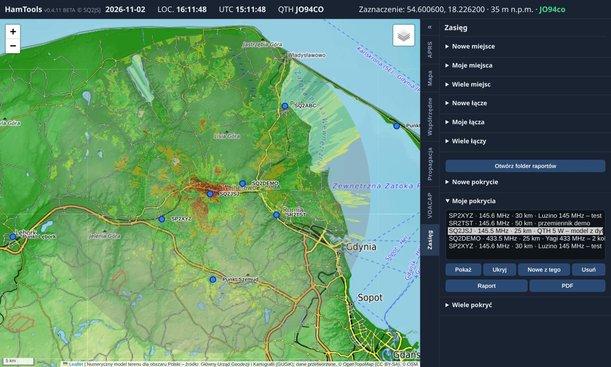
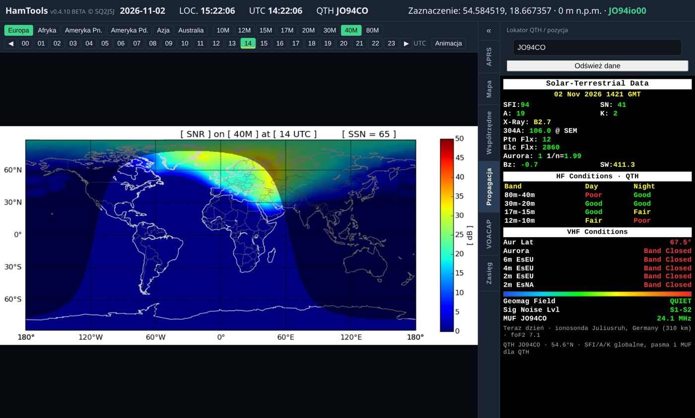
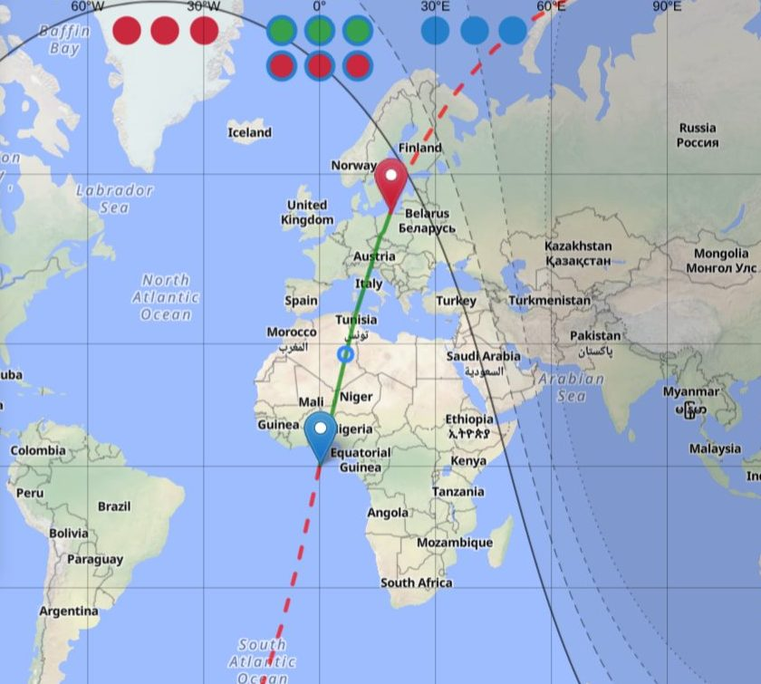
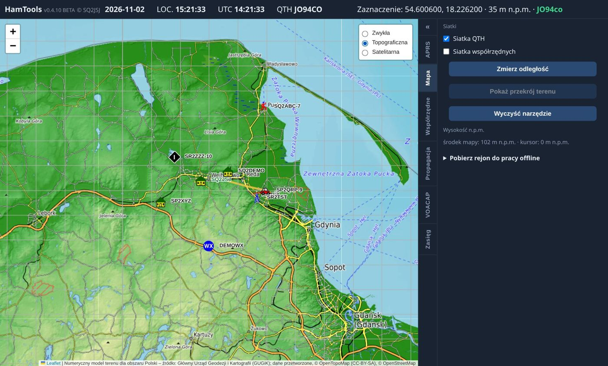
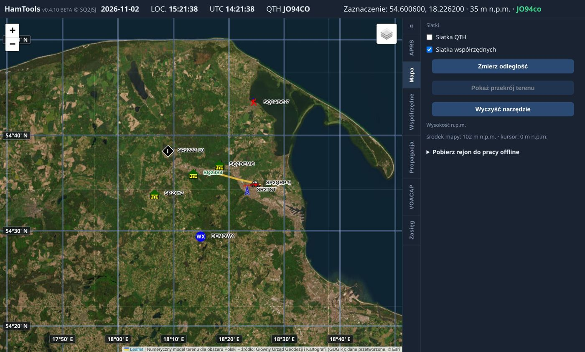
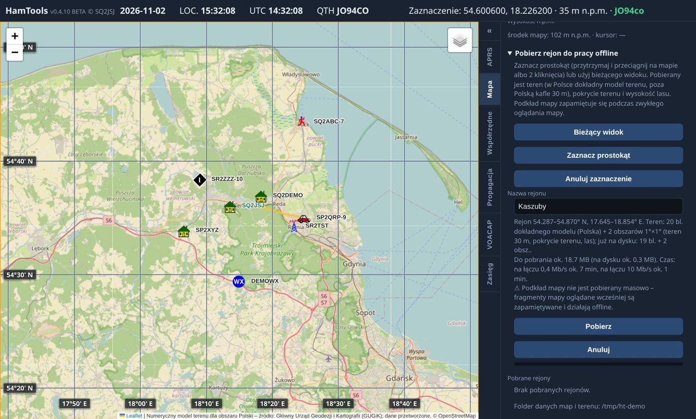
To wersja testowa (BETA) – mogą występować błędy. Uwagi mile widziane.